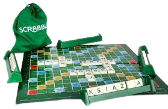
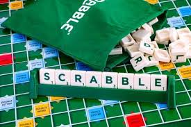
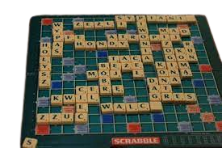
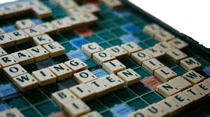

Zasady Gry
Gra polega na losowaniu płytek z literami (jednocześnie gracz dysponuje siedmioma takimi płytkami) i układaniu z nich słów na planszy. Słowa układane są w sposób przypominający krzyżówkę. Każdy kolejny wyraz musi wykorzystywać co najmniej jedną literę znajdującą się już na planszy. Gracz, który nie może lub nie chce ułożyć z posiadanych liter poprawnego słowa, albo pasuje, albo wymienia litery. Ułożone słowa są punktowane, przy czym grę wygrywa ten, kto łącznie zdobędzie większą liczbę punktów niż każdy z przeciwników. Dozwolone jest korzystanie ze wszystkich słów znajdujących się w słownikach języka polskiego oraz ich poprawnych form gramatycznych, z wyjątkiem tych, które zaczynają się od wielkiej litery, są skrótami, przedrostkami lub przyrostkami albo wymagają użycia apostrofu lub łącznika. Gra w scrabble została wymyślona w 1931 roku przez, bezrobotnego w owym czasie, architekta Alfreda Moshera Buttsa z Rhinebeck w stanie Nowy Jork, który opatrzył swoje dzieło nazwą Criss-Cross. Wartość punktową liter ustalił, obliczając częstotliwość ich występowania na stronie tytułowej New York Timesa. Od tego czasu wartości nigdy nie uległy zmianie (pomijając wydania gry w innych językach).
Grę zaczęto sprzedawać po raz pierwszy w roku 1946 pod nazwą Lexiko jako produkt spółki specjalnie w tym celu utworzonej przez Buttsa i emerytowanego urzędnika państwowego, Jamesa Brunota. Wcześniej Butts próbował zainteresować swoją grą kilka najsłynniejszych wytwórni gier planszowych, ale wszystkie odrzuciły ją jako zbyt nudną. Brunot produkował zestawy własnoręcznie (dwieście egzemplarzy tygodniowo) w swoim garażu w Danbury w Connecticut.
W roku 1948 prawa do gry nabyła firma Selchow & Righter, która uruchomiła jej masową produkcję pod nazwą Scrabble. Butts otrzymywał 5 centów od każdego sprzedanego egzemplarza. Do 1974 roku, kiedy to wygasły jego prawa autorskie do gry, zarabiał 50 tys. dolarów rocznie.
Do śmierci Buttsa w 1993 roku na całym świecie sprzedano ponad 100 mln egzemplarzy.
Zestaw Liter
- 1 punkt: A (x9), E (x7), I (x8), N (x5), O (x6), R (x4), S (x4), W (x4), Z (x5)
- 2 punkty: C (x3), D (x3), K(x3), L(x3), M(x3), P (x3), T (x3), Y (x4)
- 3 punkty: B (x2), G(x2), H(x2), J (x2), Ł (x2), U (x2)
- 5 punktów: Ą (x1), Ę (x1), F (x1), Ó (x1), Ś (x1), Ż (x1)
- 6 punktów: Ć (x1)
- 7 punktów: Ń (x1)
- 9 punktów: Ź (x1)
- 0 punktów: blank (x2
GALERIA




Instrukcja